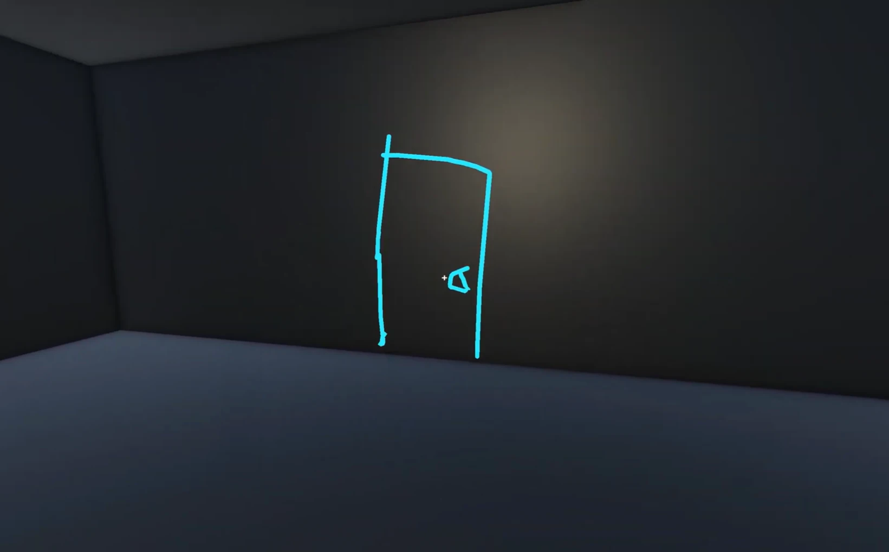

Keys and Doors.
Team
Solo
Timeline
September 2026
A short tech demo with 3D drawing mechanics (and a gun).

Screenshots
Next projectUnder the Pines
Solo
September 2026
A short tech demo with 3D drawing mechanics (and a gun).
